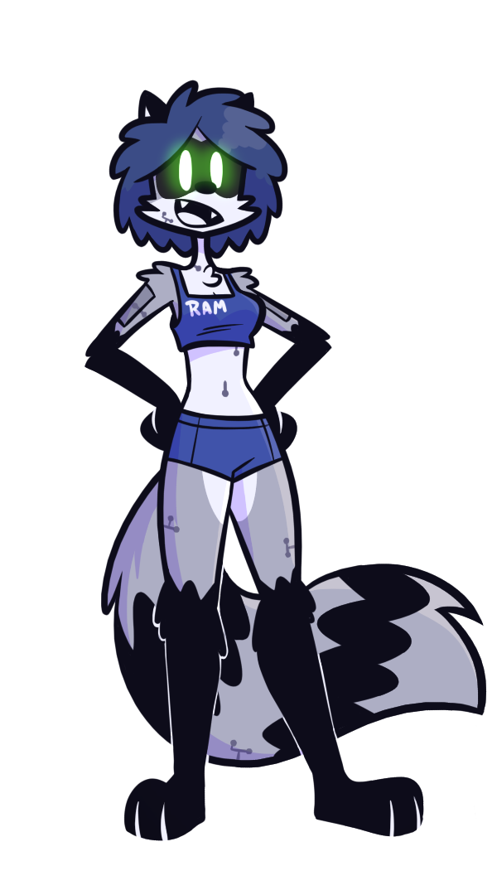

"R.A.M. the robot" is a webcomic about the day-to-day of R.A.M., a robotic Raccoon, and her friends as interplanetary mail carriers in the fantastic times of the 26th century. After the Great Space War (2429-2434) new and better technologies were developed, managing to create faster and cheaper spaceships. Now travel between Earth and Mars only takes a week, in average. Jake, after selling his first patent of one of his inventios, bought a ship. With his girlfriend they would use it to create an interplanetary delivery service to finance more crazy inventions. But this job did not give him enough free time to make new devices, so he hired someone to help him on the ship, although that didnt reduce his tasks very much. After many trips between Earth and Mars Jake and Jeanette saved enough money to buy a robot. This robot was a R3-40 multitask robot which they named "Random Access Memory" (R.A.M.) Thanks to her, Jake had enough free time to be able to make inventions again which would lead the entire crew to crazy experiences.

Random Access MemoryThe robot (and protagonist). Jake bought her to help in the spaceship to have enough free time to create inventions. Over time she developed a personality and became friends with everyone, well... almost everyone SPECIES: R3-40 Multitask Robot COLOR: Racoon SERIAL NUMBER: # 431 594 BUILT DATE: April 3th, 2503 BIRTHPLACE: Seasonfield, Unamed Country |
Jake Jayden RedA very intelligent person who creates many gadgets.With his girlfriend Jeanette, they founded an interplanetary delivey service for finance his inventions. Although that did not give him much free time to manufacture them, so he hired an employee and after saving a little, he bought a robot. SPECIES: Fox IQ: high BIRTH: May 30th, 2479 BIRTHPLACE: Levity Springs, United stades |
Jeanette Margarete RothenbergJake's girlfriend. She's a bit silly sometimes. The Rothenberg family was originally a family of wolves, but with the passing of generations and the mixture of cultures they ended up being red pandas SPECIES: Red Panda RICH FAMILY: Yes BIRTH: September 12th, 2480 BIRTHPLACE: Fiktivestadt, Germany |
Bud Nermal RossA guy Jake and Jeanette hired to help in the spaceship who became a great friend of theirs. He's a bit of a joker. yeah, he doesn't wear pants (in this universe it's not a bad thing, after all everyone is covered in fur) SPECIES: Dog GRAVITY TOLERANCE: Medium BIRTH: Mesha 20, 465 BIRTHPLACE: Olimpus City, Confederate Martian Territories |